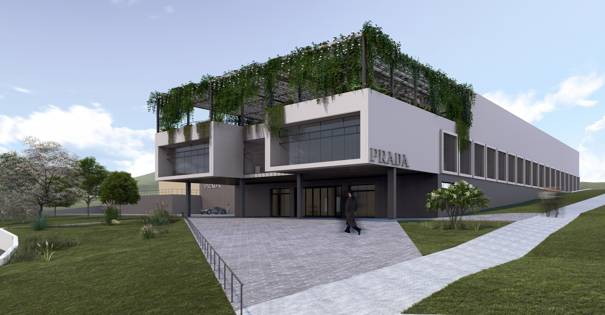

Výroba značkové konfekce v Brně
Ateliérový projekt zaměřený na návrh nového výrobního závodu pro společnost PRADA v brněnské čtvrti Královo Pole.
Koncept
Projekt se zaměřuje na návrh nového výrobního závodu pro společnost PRADA v brněnské čtvrti Královo Pole, který bude určený k výrobě luxusní dámské módy. Cílem je vytvořit moderní, funkční a reprezentativní komplex, který bude zahrnovat administrativní, výrobní, skladové a technické prostory. Budova je navržena v souladu s platnými předpisy s důrazem na efektivní provoz, kvalitní pracovní prostředí a možnost budoucího rozšíření.
Lokalita se nachází v blízkosti Purkyňovy ulice a nabízí vynikající dostupnost a blízkost výzkumných a inovačních institucí. Urbanistické řešení zajišťuje přehlednou organizaci dopravy oddělením zásobovacích tras od pěší a osobní dopravy, což zvyšuje bezpečnost a provozní přehlednost. Architektonicky budova sleduje koncept hmotového řešení ve tvaru písmene L s centrálním skladovacím jádrem, které je zdůrazněno konzolovým administrativním prostorem nad hlavním vchodem, který dodává stavbě dynamický a prestižní charakter.
Budova se skládá ze tří nadzemních podlaží: v prvním podlaží se nacházejí prostory pro zaměstnance a technické zázemí, ve druhém výrobní haly, sklady a kanceláře a ve třetím zelená střešní terasa pro odpočinek. Konstrukční systém je založen na prefabrikovaném železobetonovém rámu s vegetační střechou podporující udržitelnost. Bílá a antracitová fasáda, velké prosklené plochy a hliníkové stínící prvky zajišťují dostatek denního světla, tepelný komfort a rafinovaný architektonický výraz.
Vizualizace